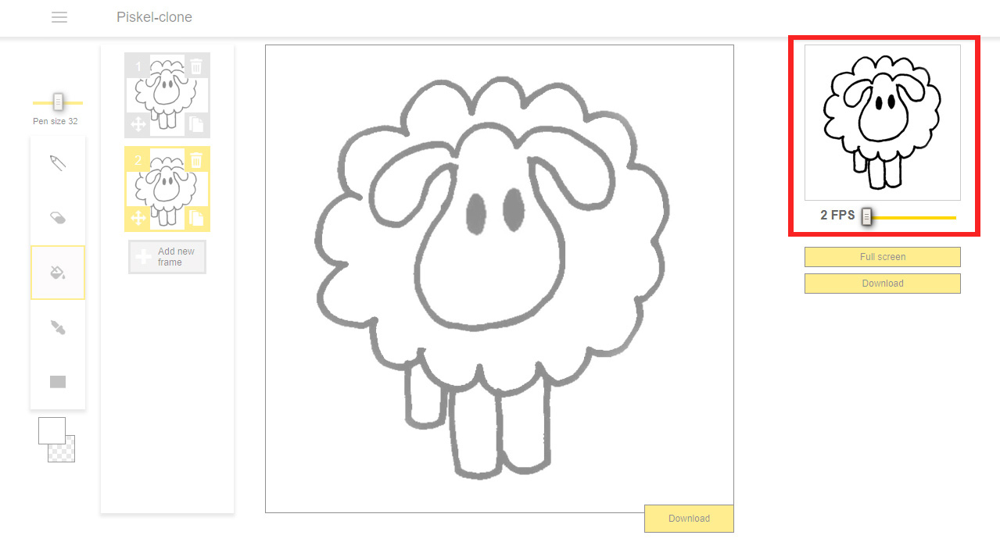
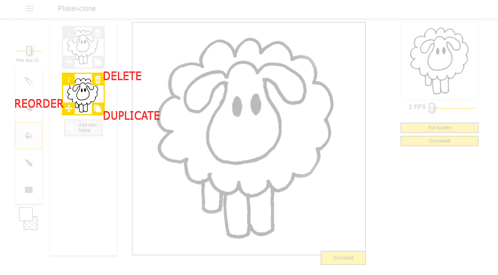
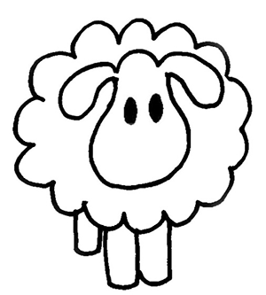
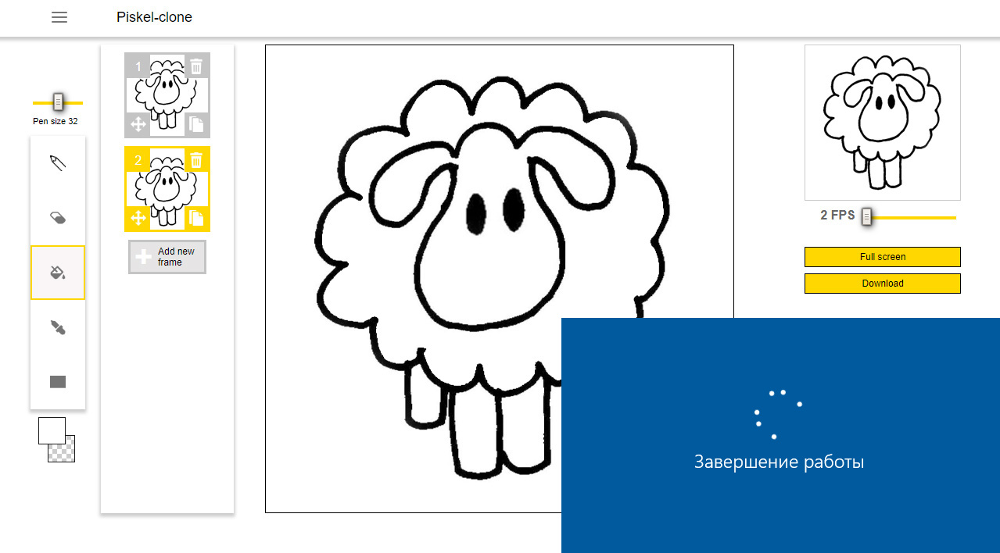

Small animation preview window in the top right corner and Full screen mode.
Ability to add/delete a frame. Ability to reorder a frame via Drag and Drop. Ability to duplicate a frame.
Save result to local file system in .gif format.
Current session should be saved and be accessible when user opens up the page again.
